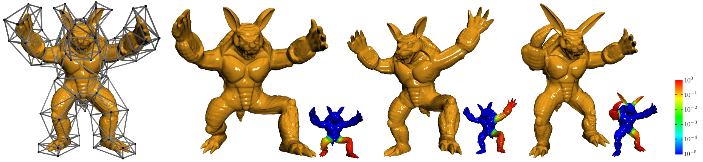
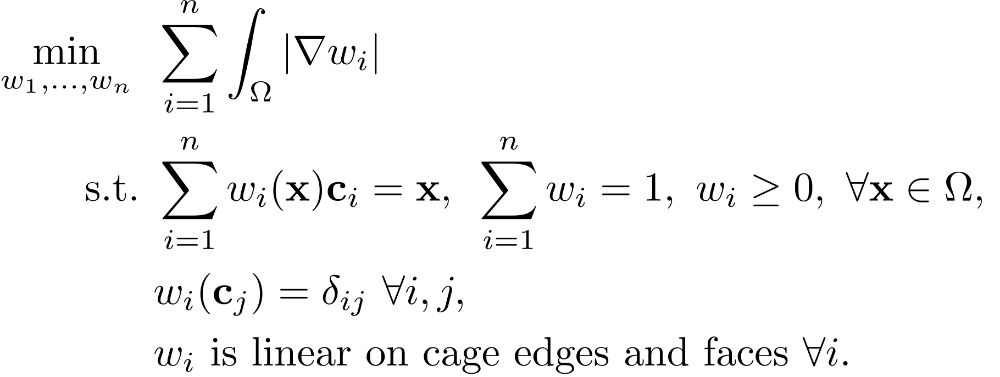
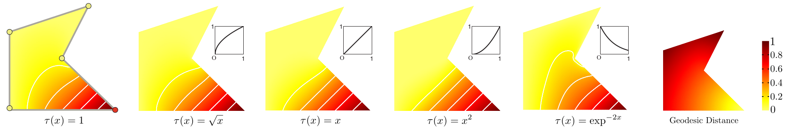
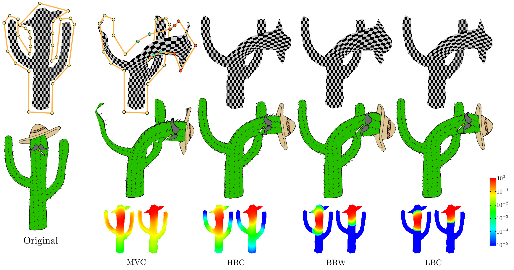
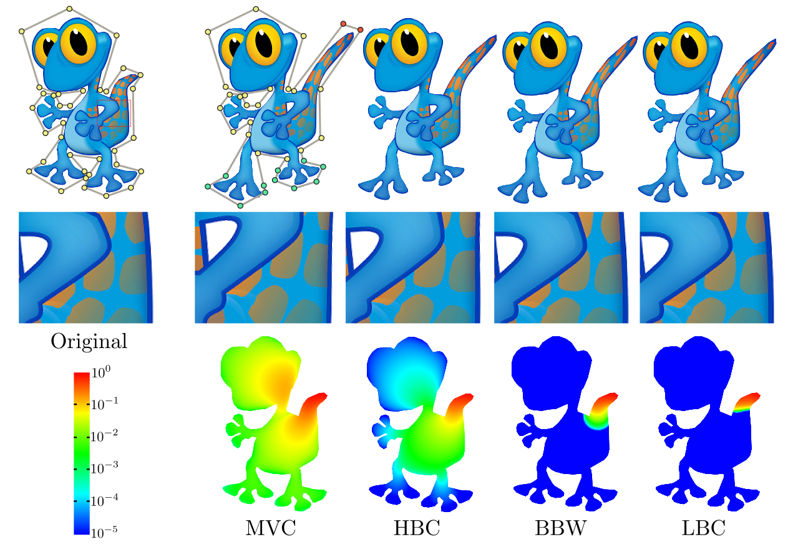
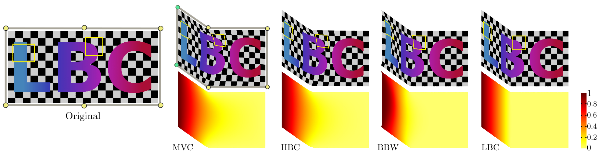

Local Barycentric Coordinates
Juyong Zhang1*
Bailin Deng2*
Zishun Liu1
Giuseppe Patanè3
Sofien Bouaziz2
Kai Hormann4
Ligang Liu1
1University of Science and Technology of China
2École polytechnique fédérale de Lausanne
3CNR - Istituto di Matematica Applicata e Tecnologie Informatiche
4Università della Svizzera italiana
*Joint first authors
ACM Transactions on Graphics 2014
(Proc.SIGGRAPH ASIA 2014) |
|
 |
Teaser: Using LBC for 3D cage-based manipulation allows for local, smooth, and shape-aware deformations. Only parts near the manipulated control points are deformed, as indicated by the logarithmic color-coding of the displacement magnitude. |
Abstract: |
Barycentric coordinates yield a powerful and yet simple paradigm to interpolate data values on polyhedral domains. They represent interior points of the domain as an affine combination of a set of control points, defining an interpolation scheme for any function defined on a set of control points. Numerous barycentric coordinate schemes have been proposed satisfying a large variety of properties. However, they typically define interpolation as a combination of all control points. Thus a local change in the value at a single control point will create a global change by propagation into the whole domain. In this context, we present a family of local barycentric coordinates (LBC), which select for each interior point a small set of control points and satisfy common requirements on barycentric coordinates, such as linearity, non-negativity, and smoothness. LBC are achieved through a convex optimization based on total variation, and provide a compact representation that reduces memory footprint and allows for fast deformations. Our experiments show that LBC provide more local and finer control on shape deformation than previous approaches, and lead to more intuitive deformation results. |
Formulation: |
|  |
LBC formulation minimizes the sum of total variation (TV) for all coordinate functions, subject to the constraints of reproduction, partition of unity, non-negativity, linearity and Lagrange property. |
Results: |
|  |
| Figure 1: Weighted formulation of LBC. Using weighted TV, we can control the level of locality for LBC. From left to right, we show the effect of different functions τ in (11). Monotonically increasing functions τ lead to more local support, while monotonically decreasing functions τ lead to more global support. The rightmost image shows the normalized distance function (12) for the control point. |
| |
|  |
| Figure 2: Deformation of the cactus model with different control weight functions. The control points in red and in green are subject to rigid and non-rigid transformations, respectively. The color-coding shows the absolute sums of weight functions for the green and red control points, respectively. LBC preserve the shape of the hat, since it is only influenced by the red control points, and deformed by the same rigid transformation. Other coordinate schemes distort the hat shape, due to the influence from the green control points. |
| |
|  |
| Figure 3: The gecko image is deformed using control points close to the tail (in red) and the feet (in green). The color-coding shows the absolute sum of control weight functions for the red control points. The elbow and the head remain fixed with LBC, while being deformed by other weight functions. A comparison of the deformations can be found in the supplementary video. |
| |
|  |
| Figure 4: Deformation of an image by moving two control points (in green), and color-coding for the magnitude of deformation. LBC not only produce a more local deformation, but also preserve the linear features of the texture better. |
| |
| Acknowledgements: |
We thank Antonin Chambolle and the reviewers for their valuable comments and Hao Li for his help on the video. This work has been supported by NSF of China (61222206, 61303148), NSF of Anhui Province, China (1408085QF119), Specialized Research Fund for the Doctoral Program of Higher Education (20133402120002), the EU FP7 Integrated Project IQmulus (FP7-ICT-2011-318787), Swiss National Science Foundation (grant 200021 137626), and the 100 Talents Program of the Chinese Academy of Sciences. |
|
| BibTex: |
| |
@article{Zhang2014,
author = {Juyong Zhang and Bailin Deng and Zishun Liu and Giuseppe Patanè and Sofien Bouaziz and Kai Hormann and Ligang Liu},
title = {Local Barycentric Coordinates},
journal = {ACM Transactions on Graphics},
volume = {33},
issue = {6},
pages = {188:1-188:12},
year = {2014}
} |
| |
| Downloads: |
| |
| Disclaimer: The paper listed on this page is copyright-protected. By clicking on the paper link below, you confirm that you or your institution have the right to access the corresponding pdf file. |
|